Kako radim?
Iz stomaka. Iz materice. Osetim, pa pokrenem ruku. Podsvest bira, svest dorađuje.
Zašto radim?
Definicija magije: menjanje svesti po volji. Crtanje, slikanje, photoshopiranje, 3D, animacija - menjanje stvarnosti po volji. Stvaranje novih svetova, prekrajanje sudbina i priča, onih iz davnina, ovih današnjih. Neka Frida nađe ljubav, neka Pikasu bude odsečena piša. Abrakadabra - stvaram kako izgovaram. Stvaram i kako crtam, i kako ređam piksele po sazvežđu binarne galaksije. Clone tool - sad te ima duplo! Healing brush - brišem ti tu zabrinutost iz očiju. Eraser tool - sad te više nema! UV Sphere - renderujem novu Zemlju... Za sve pesnike i decu, za nomade, čergare, monahe i majke, putnike pripovedače, one kojima su stopala predugo bila zakovana za zemlju dok su čeznuli za zvezdama, za one kojima nikad dosta neba, za njih stvaram, jednu trpezu - Agape.
Džoker
Crtež Džokera. Korišćen je ugljen, pasteli, voda, flomaster. Za moju dušu. 2023.
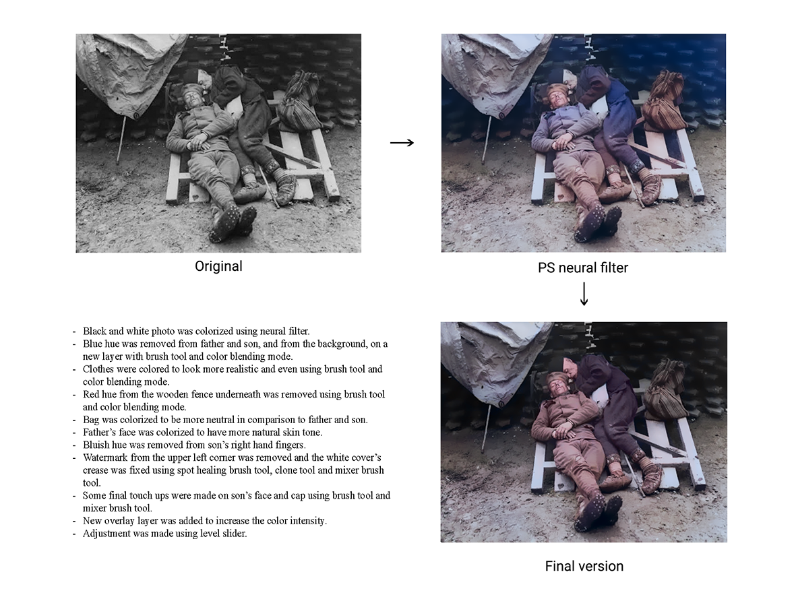 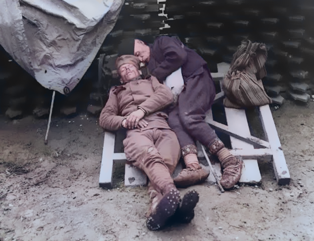Retuširanje crno-bele fotografije
Retuširanje crno bele fotografije u Photoshopu. Slika je obojena uz pomoć neuralnog filtera, zatim je brush tool-om uklonjena plava boja sa pozadine, odeće, kao i crvena koja je bila na daskama ispod kojih spavaju otac i sin. Torba iza oca je prebojena tako da bude neutralnija. Lice oca je obojeno brush tool-om, da bude iste boje kao i lice sina. Uklonjen je watermark u levom gornjem uglu healing brush tool-om i ispeglane su ivice. Plava boja je uklonjena sa prstiju sina, kapa i lice su doradjeni brush tool-om, healing brush tool-om i clone tool-om. Očevo odelo je prebojeno. Slika je potamnjena uz pomoć levels alata. Projekat rađen za Yarnhub, kompaniju koja se bavi produkcijom video sadržaja, animacija, filmova u oblasti istorije. Samostalni projekat, 2024.
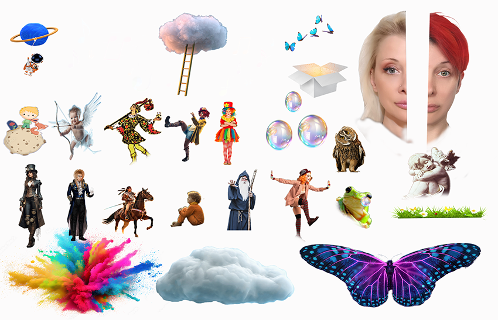 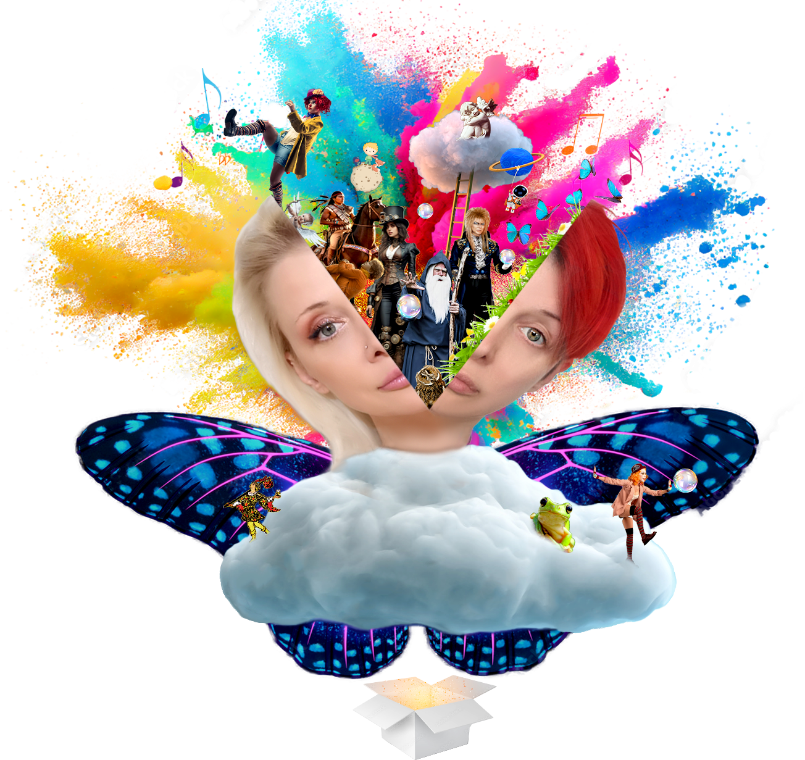Photoshop composite
Naslovna slika, rađena kao Photoshop composit. Svi elementi su uzeti sa Interneta, spojeni tako da kao izlaze iz glave. Eksplozija boja, heruvimi, leptiri, oblaci,magovi, žabe, klovnovi. Šta bi se sve našlo kada bi se otvorila glava. Jedan deo lica predstavlja ljudski deo, drugi vilenjački, 2024.
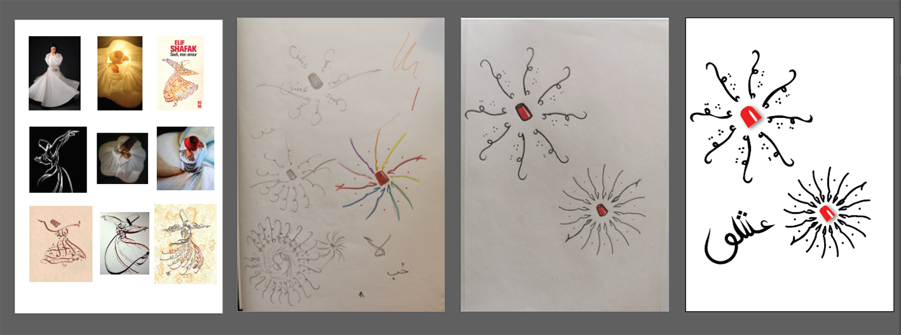Rumi, logo
Projekat za predmet Primena vektorske grafike u dizajnu. Trebalo je osmisliti logo za temu po izboru. Izabrala sam Rumija, persijskog pesnika i mistika. Istražila sam po Internetu šta je sve rađeno na temu Rumija, od kaligrafije do crteža, i onda sam skicirala kako bi taj logo izgledao. Ideja je bila da bude persijske kaligrafije, u obrisima derviša koji se vrti, sa jednom rukom prema nebu, da primi blagoslov od Boga, i drugom ka Zemlji. Napisana je reč ashq sto znači ljubav, tako da se linije šire ka spolja, poređane su kružno, oko centra, i sugerišu širenje, kretanje, vrtenje u krug, što i jeste praksa derviša koji na taj način ulaze u trans i gube svoje ja. Logo je urađen u Ilustratoru. Samostalni rad, 2023.
Mondriani kao game developer
Šta bi bilo da su stari umetnici rođeni danas? Čime bi se bavili ako ne bi slikali? Mondrijani bi možda izmislio Tetris i bavio se pravljenjem igrica. Jedna od Mondrijanijevih slika je isečena na zasebne kvadrate u Photoshopu, a onda sam od njih napravila Tetris u After Effects-u i dodala Muziku iz igrice Mario. Samostalni rad, 2024.


Frida, Vinsent i Frivi sa Pepom
Ovako se ispravlja zemaljska nepravda. Što inače čovek da crta, lepi, secka ako ne da stvori ono što nije bilo a trebalo je, da poništi ono što jeste bilo a nije trebalo, ili da prekroji sudbine i izmisli čitavu jednu radost. Ovako je trebalo da bude... Frida i Vinsent, sa dva kraja sveta i jednom istom čežnjom - za slikanjem i za ljubavlju. U jednom paralelnom univerzumu, ovde na mom papiru i u mojoj glavi, njih dvoje su se sreli, i sve je bilo radost. Evo ih ovde, srećni, u bašti svog druga slikara, na jednom lepom mostu nad jezerom, sa svojom malom bebuškicom koja se zove Frivi - kao početna slova Fride i Vinsenta. Frivica liči i na mamu i na tatu, na mamu po obrvama, na tatu po boji kose. Omiljena igračka joj je Pepa Prase. Fridino i Vinsentovo lice su njihovi sopstveni autoportreti koje sam ubacila u fotografije odela iz devetnaestog veka. Vinsent je, kako moda i običaj nalažu, dobio i šešuar. Kolaž napravljen u Photoshopu, za moju dušu, i Vinsentovu i Fridinu, 2022. i 2024.
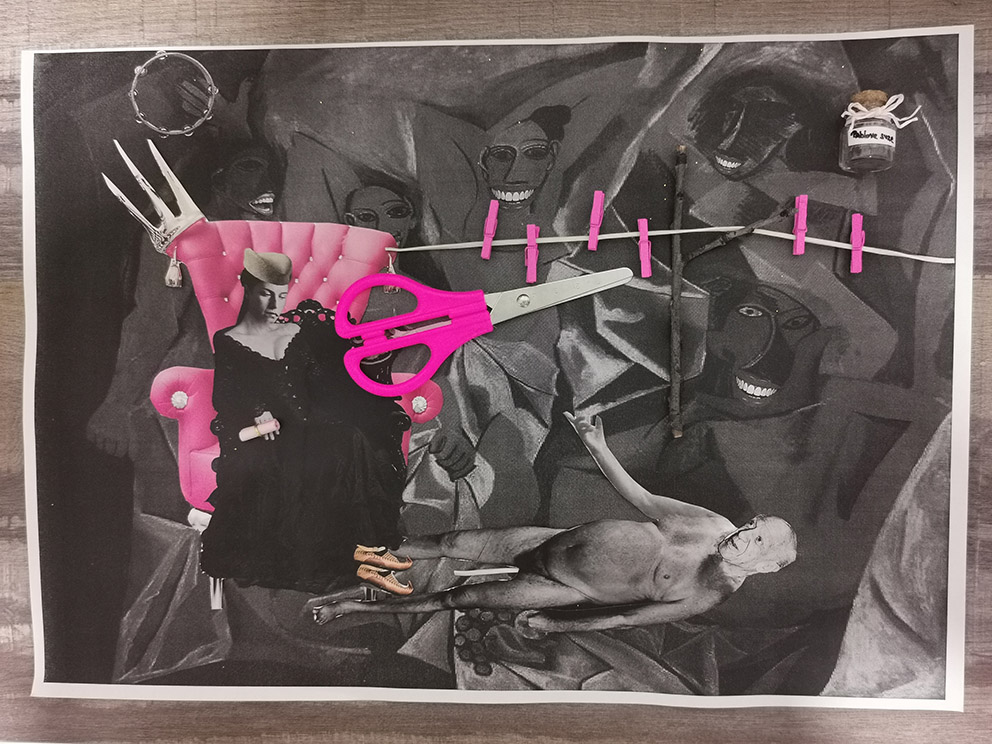 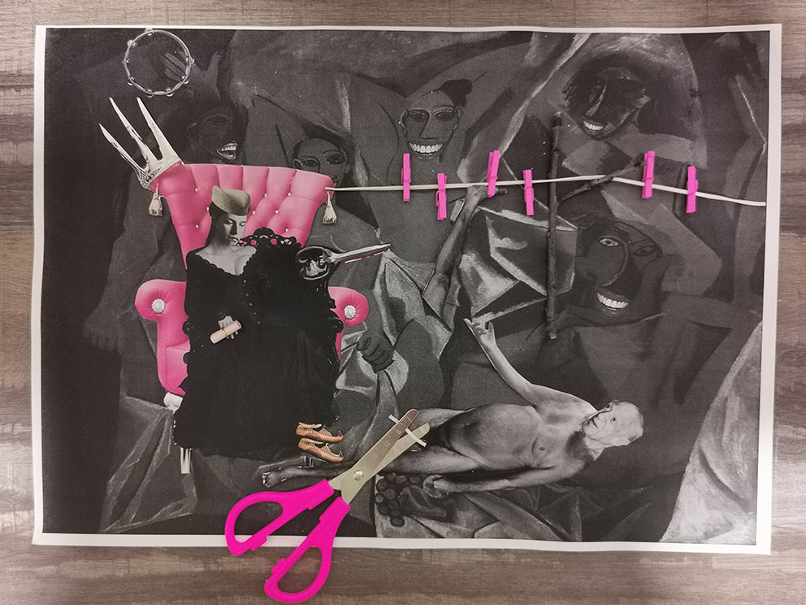 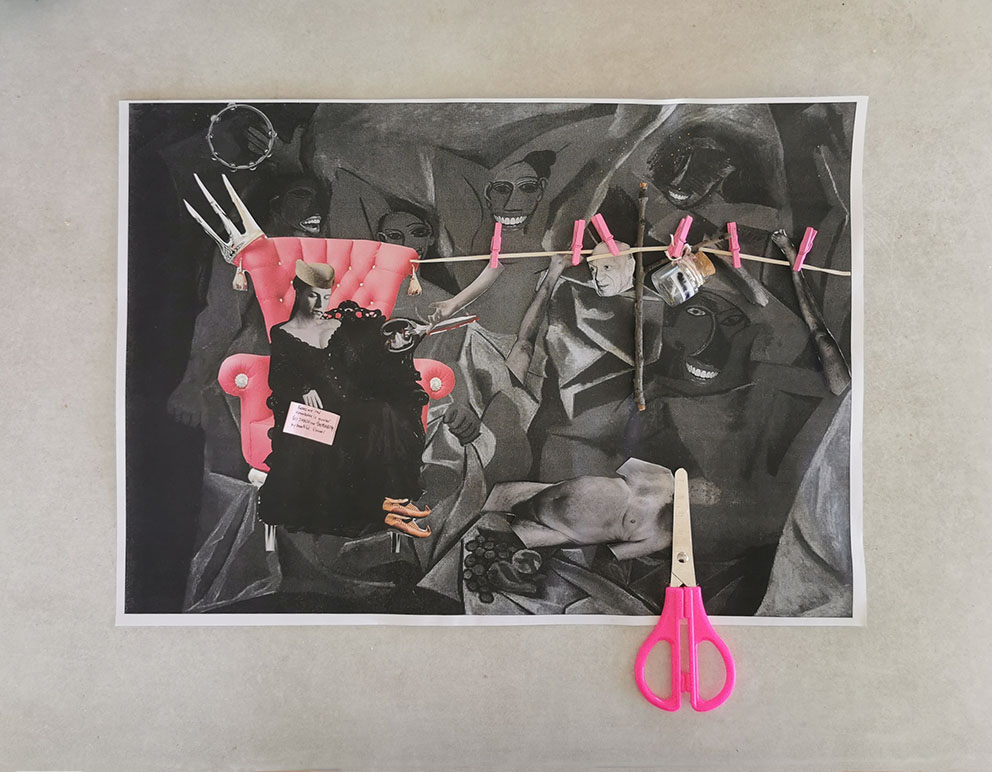Dora Maar
Teodora, Dora, Marković i Pablo. Teodora, grčko ime u značenju "dar od Boga" i Pablo, španska varijanta latinskog "paulus" - mali. Mali je smatrao da se žene dele u dve grupe: boginje ili otirači, da su one mašine za patnju. Njegova mržnja prema ženama i njegov narcisizam obogaljile su svaku ženu sa kojom je došao u dodir, a nije bila pošteđena ni njegova sopstvena porodica. Doru je maltretirao i fizički i psihički, što je dovelo do njenog nervnog sloma i depresije.
Na početku se vidi Dora kako drži makaze i gleda na dole, u Pikasa, koji rukom pokazuje kako mu ništa nije jasno, i ne zna šta se desilo. Na drugoj slici, Dora mu seče pišu. Na trećoj vidimo obezglavljenog, obogaljenog Pikasa, kako leži pod nogama Teodore. Stavila sam joj na glavu našu šajkaču, opanke, jer je bila naša. Naše znači - Jugoslovenka. Iako je u crnom, u žalosti i u oplakivanju nad svojim životom sa ovom spodobom, ona sedi u fotelji kraljice. U ovom crno-belom, bezbojnom, mrtvom svetu u koji je Pikaso uvukao kao Had Persefonu, Teodora zauzima svoje mesto kraljice. Jedina boja je roza - boja nežne ljubavi, ljubavi prema sebi. Ona vaskrsava. Vraća se u život, izlazi iz podzemlja. Pikaso je raskomadan. Prvo mu je odsečena piša i zakačena za žicu za veš, kakve i danas postoje kod nas, one sa račvastom motkom. Prvo piša, pa sve redom. U pozadini, prostitutke iz Avinjona slave ovaj čin, smeju se i igraju sa dairama u rukama. Na konopcu za veš je i tegla puna Pikasovih suza, a Teodora je otvorila svitak koji je držala u rukama, i on kaže: "Roses are red, knowledge is power, go smash the patriarchy, my beautiful flower". To je nova mantra i za nju i za žene u pozadini koje su predugo bile gažene patrijarhatom i muškarcima koje on proizvodi, muškarcima kao sto je Pikaso.
Tehnika je kolaž. U photoshopu je obrađena slika Gospođice iz Avinjona tako da se smeju. Svima sam im dodala usta sa zubima razvučena u osmeh, a dodate su i daire. Slika je dštampana crno-belo, i stavljena kao pozadina. To je prošlost, to je nakaradnost Pikasovog uma koji se vidi i na način na koji predstavlja žene. Nalepila sam pravo malo račvasto drvce i konopčić koji ide od Dorine fotelje. Tu su i prave štipaljkice na koje sam kačila deo po deo odsečenog Pabla. Svitak je napravljen od roze papira, kao i sve što ima veze sa Dorinim oživljavanjem i izlaskom iz podzemlja. Makaze kojima je isečen su isto roze, kao boja koja simbolizuje samoljubav, zdravu ljubavi prema sebi koja najzad shvata da zaslužuje mnogo nežnosti u ophođenju prema sebi. Pikasova odsečena glava gleda sa žice prema Dori, njegova ruka je pružena prema njoj, ali se ona ne osvrće na to. Život naspram smrti. Ljubav naspram pakla. Mir naspram ludila. Rad je rađen samostalno na predmetu Vizuelne osnove, 2022.
Crteži, 2021
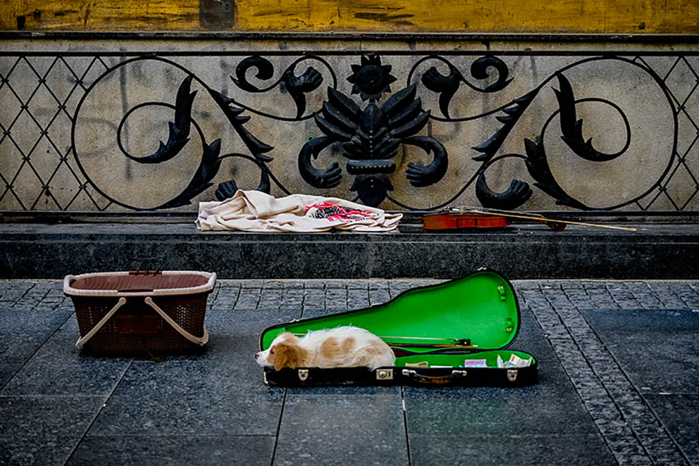 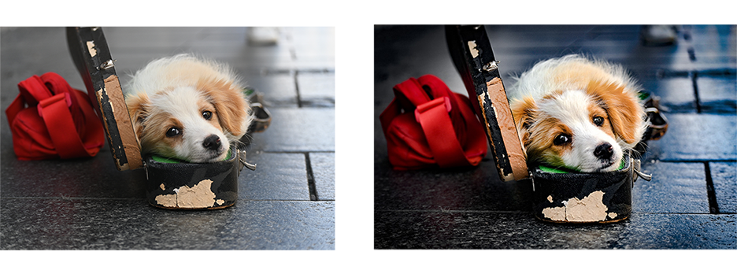Pera
Ovo je Pera, kučence koje je ležalo u kutiji violine i čuvalo je, zajedno sa svim paricama koje je njegova drugarica zaradila taj dan svirajući na violini u Knez Mihajlovoj ulici. Pera je slikan Nikonom (Nikon Z 50, 68mm, f/4.8, 1/500s, ISO 400), onda obrađen u Photoshopu, tako da boje budu intenzivnije, dlaka definisanija, oči bistrije, i prostor oko njega zatamnjen da bi on više došao do izražaja. 2022.
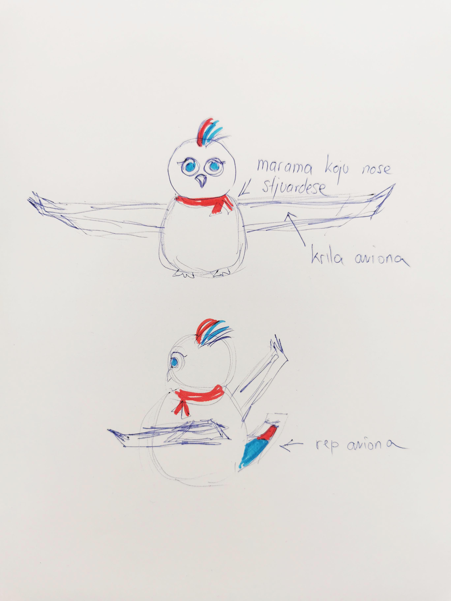Konkurs za Maskotu nacionalne aviokompanije AirSerbia
Crtež za konkurs AirSerbia aviokompanije, za maskotu. Ideja je da to bude beli golub, jer se aerodrom zove Nikola Tesla, na mnogim avionima je njegov lik, a on je imao poseban odnos sa jednom belom golubicom koju je smatrao svojom duhovnom pratnjom. Golub inače asocira i na nebo, letenje, što je u skladu sa aviokompanijom. Umesto krila, stavila sam joj avionska krila i rep aviona. Rep i ćubica na glavi su obojeni u boje naše zastave, a oko vrata ima maramu koju nose naše stjuardese. Ponuđena je i varijanta da se ispod krila nalaze motori aviona, tako da maskota bude spoj goluba i aviona. Predložila sam da se prave plišane igračkice raznih veličina u obliku ove maskote, koje bi se prodavale na aerodromu i/ili davale deci na letovima. 2024.
U Metaverzumu, možemo da se sretnemo ovde:
Napravljeno s ljubavlju u dalekoj, dalekoj galaksiji...